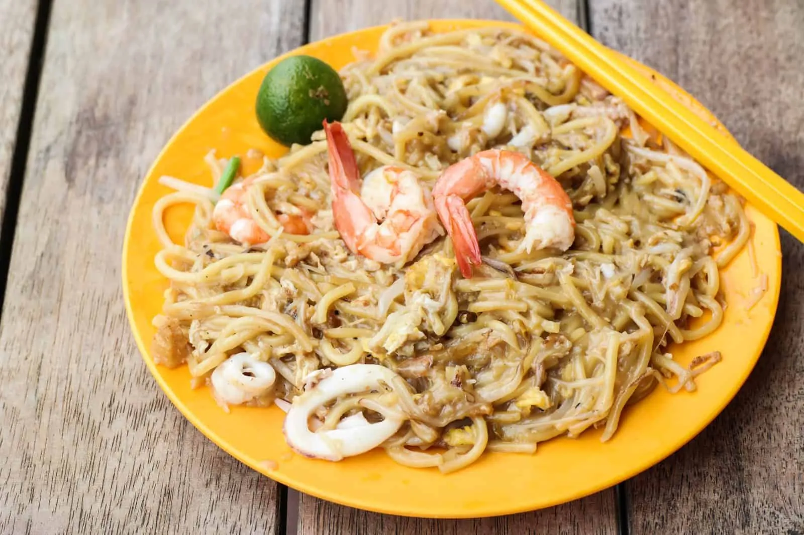

Homepage
Hokkien Mee Recipe

Description
Hokkien Mee is a beloved Southeast Asian noodle dish known for its rich seafood broth, yellow noodles, and mix of prawns, squid, and pork belly.
Ingredients
- 200g yellow noodles
- 100g vermicelli (bee hoon)
- 100g pork belly, sliced
- 100g prawns, peeled and deveined
- 80g squid, cleaned and sliced
- 2 eggs
- 2 cloves garlic, minced
- 2 tbsp fish sauce
- 300ml prawn stock
- Chives or spring onions (optional)
- Sambal chili and lime for serving
Steps
- Boil the noodles and vermicelli briefly until softened, then drain and set aside.
- In a hot wok, sauté garlic until fragrant. Add pork belly and stir-fry until lightly browned.
- Add prawns and squid. Stir-fry until cooked through.
- Push ingredients aside and scramble eggs in the center. Mix everything together.
- Add the noodles, fish sauce, and prawn stock. Stir-fry until stock is mostly absorbed.
- Add chives or spring onions if desired. Adjust seasoning to taste.
- Serve hot with sambal chili and a squeeze of lime.